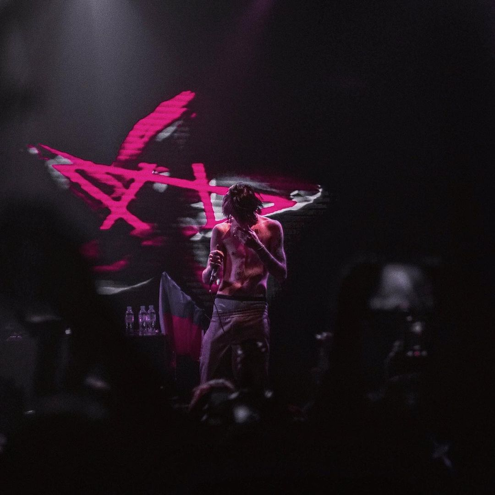

Actualité
Depuis sa disparition, l'influence de Lil Peep perdure et continue de toucher de nombreuses personnes. Netflix a produit un documentaire nommé "Everybody's Everything", qui explore sa vie, sa carrière et ses luttes personnelles. Ces dernières années, petit à petit, ses albums et morceaux publiés uniquement sur SoundCloud par différentes sources ont fini par apparaître sur les plateformes de streaming. Il y a également des concerts en hommage à Lil Peep, où des artistes proches de lui se produisent.
Discographie
Crybaby-2016
Hellboy-2016
Come Over When You're Sober, Pt. 2-2018
Everybody's Everything-2019
Événements
Concert à Moscou
Le 30 mars 2017, Lil Peep performe à Moscou en Russie. C'est la première date de sa première tournée mondiale. Un moment très marquant pour sa carrière.

Concert à El Paso
Le 14 novembre 2017, la veille de sa disparition il se produira une dernière fois sur la scène d'El Paso dans le Texas.
Clips